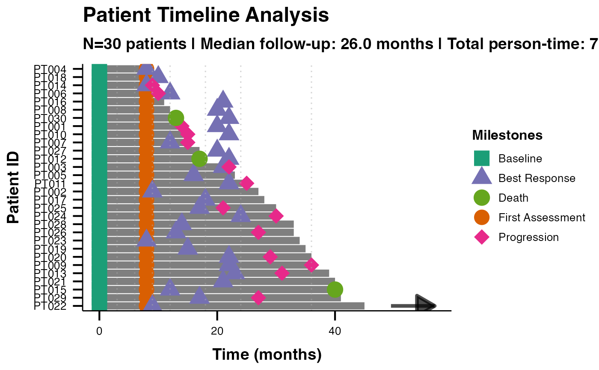

Oncology Clinical Trial Swimmer Plot Data
Source:R/data_swimmer_unified_docs.R
swimmer_unified_oncology.RdA realistic oncology clinical trial dataset demonstrating comprehensive swimmer plot analysis for regulatory submissions. Includes detailed clinical milestones, tumor characteristics, and demographic information.
Usage
data(swimmer_unified_oncology)Format
A data frame with 20 rows and 14 variables:
- PatientID
Character. Unique patient identifiers (PT001-PT020)
- StartTime
Numeric. Treatment start time (all patients start at 0)
- EndTime
Numeric. Treatment end time in months (8-54 months)
- BestResponse
Character. Best overall response per RECIST (CR, PR, SD, PD)
- Baseline
Numeric. Baseline assessment time
- FirstAssessment
Numeric. Time of first assessment in months
- BestResponseTime
Numeric. Time of best response in months
- Progression
Numeric. Time of disease progression (NA if no progression)
- Death
Numeric. Time of death (NA if alive)
- Stage
Character. Disease stage
- Arm
Character. Treatment arm
- Site
Character. Clinical trial site
- Age
Numeric. Patient age
- Gender
Character. Patient gender
See also
Other swimmer plot datasets:
swimmer_unified_basic,
swimmer_unified_comprehensive,
swimmer_unified_datetime,
swimmer_unified_events
Examples
data(swimmer_unified_oncology)
# Comprehensive oncology swimmer plot
swimmerplot(
data = swimmer_unified_oncology,
patientID = "PatientID",
startTime = "StartTime",
endTime = "EndTime",
responseVar = "BestResponse",
milestone1Name = "Baseline",
milestone1Date = "Baseline",
milestone2Name = "First Assessment",
milestone2Date = "FirstAssessment",
milestone3Name = "Best Response",
milestone3Date = "BestResponseTime",
milestone4Name = "Progression",
milestone4Date = "Progression",
milestone5Name = "Death",
milestone5Date = "Death",
referenceLines = "protocol",
showInterpretation = TRUE,
personTimeAnalysis = TRUE,
responseAnalysis = TRUE,
plotTheme = "ggswim",
sortOrder = "duration_desc"
)
#>
#> SWIMMER PLOT
#>
#> character(0)
#>
#> Timeline Summary Statistics
#> ───────────────────────────────────
#> Metric Value
#> ───────────────────────────────────
#> Number of Patients 30.00000
#> Total Observations 30.00000
#> Median Duration 26.00000
#> Mean Duration 24.90000
#> Total Person-Time 747.00000
#> Mean Follow-up 24.90000
#> CR Rate (%) 23.30000
#> PD Rate (%) 26.70000
#> PR Rate (%) 26.70000
#> SD Rate (%) 23.30000
#> ───────────────────────────────────
#>
#>
#> <div style='background-color: #e8f5e8; padding: 15px; border-radius:
#> 5px; margin: 10px 0;'>
#>
#> Clinical Interpretation
#>
#> <div style='margin: 10px 0;'><h5 style='color: #2e7d32;'>Timeline
#> Analysis:
#>
#> Study included 30 patients with 30 timeline observations. Median
#> follow-up was 26.0 months (range: 8.0 to 45.0 months).
#>
#> <div style='margin: 10px 0;'><h5 style='color: #2e7d32;'>Person-Time
#> Analysis:
#>
#> Total person-time: 747.0 months. Average follow-up per patient: 24.9
#> months.
#>
#> <div style='margin: 10px 0;'><h5 style='color: #2e7d32;'>Response
#> Pattern Analysis:
#>
#> Most common response was PD (26.7% of observations). Response
#> distribution shows clinical patterns suitable for efficacy analysis.
#>
#> Person-Time Analysis
#> ─────────────────────────────────────────────────────────────────────────────
#> Response Type Patients Total Time Mean Time Follow-up Density
#> ─────────────────────────────────────────────────────────────────────────────
#> CR 7 208.0000 29.71000 3.365000
#> PD 8 191.0000 23.88000 4.188000
#> PR 8 191.0000 23.88000 4.188000
#> SD 7 157.0000 22.43000 4.459000
#> ─────────────────────────────────────────────────────────────────────────────
#>
#>
#> Milestone Event Summary
#> ───────────────────────────────────────────────────────────────
#> Milestone Events Median Time Time Range
#> ───────────────────────────────────────────────────────────────
#> Baseline 30 0.000000 0 - 0 months
#> Best Response 30 17.500000 8 - 24 months
#> Death 3 17.000000 13 - 40 months
#> First Assessment 30 8.000000 8 - 8 months
#> Progression 14 23.500000 9 - 36 months
#> ───────────────────────────────────────────────────────────────
#>
#>
#> Advanced Clinical Metrics
#> ────────────────────────────────────────────────────────────────────────────────────────────────────────────────────────────────────────────────────────────────
#> Metric Value 95% CI Unit Clinical Interpretation
#> ────────────────────────────────────────────────────────────────────────────────────────────────────────────────────────────────────────────────────────────────
#> Median Follow-up Time 26.000000 months Central tendency of patient follow-up duration
#> Interquartile Range 20.500000 months Middle 50% of follow-up duration range
#> Total Study Person-Time 747.000000 months cumulative Total observation time across all patients
#> Follow-up Density 4.016000 per 100 months Number of patients per 100 units of observation time (descriptive metric)
#> Objective Response Rate (ORR) 50.000000 31.3 - 68.7 percent Proportion with complete or partial response
#> Disease Control Rate (DCR) 73.300000 54.1 - 87.7 percent Proportion with response or stable disease
#> ────────────────────────────────────────────────────────────────────────────────────────────────────────────────────────────────────────────────────────────────
#>
